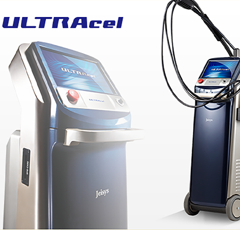
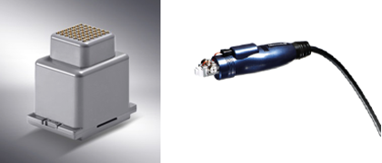
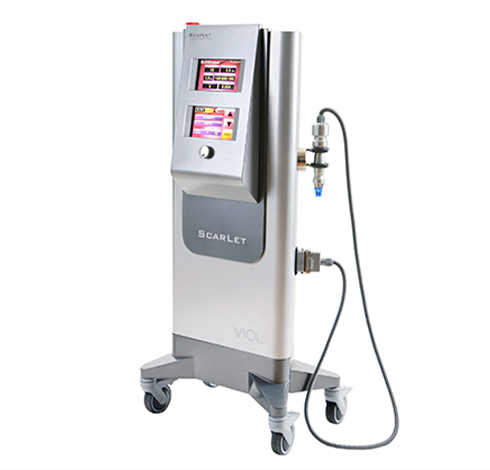
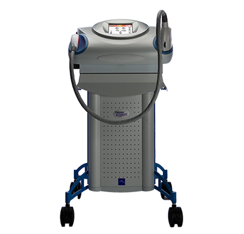
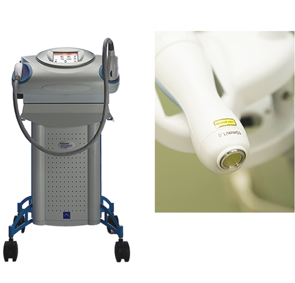
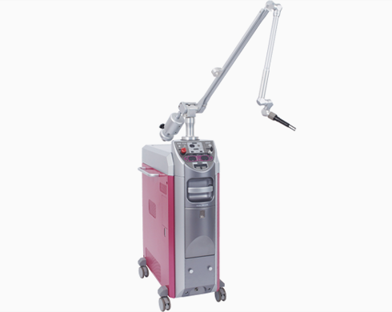
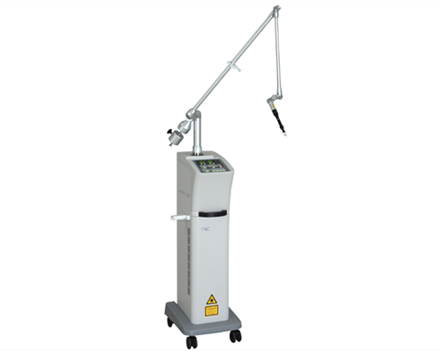
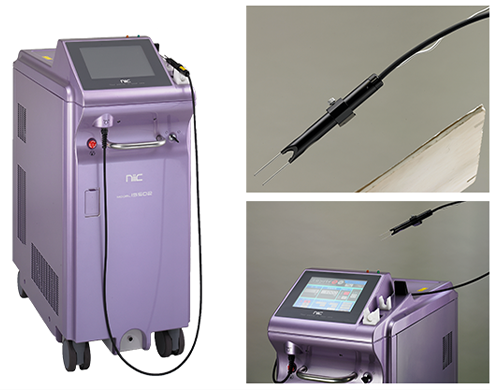

ウルトラセル(ULTRAcel)とは? 高周波(RF)、高密度焦点式超音波(HIFU)を用いて、表皮、真皮、皮下組 織と言った全ての皮膚層と、脂肪層、SMAS筋膜に熱影響を与えることで、お肌を傷 つけることなくシワ、たるみを改善させる最新治療機器です。 皮膚には元来自然治癒能力が備わっています。熱によるダメージを受け収縮したコ ラーゲンは修復の過程で新しいコラーゲンを生成します。 コラーゲンの生成能力がアップ することtで緩んだ肌は元気を取り戻し、シワ・たるみ改善効果を得ることができるのです。


レーザー治療
Laser Treatment
ホーム ＞ レーザー治療
美肌治療



ウルトラセル
ULTRAcel
ウルトラセルが持つ3つの機能
1・FUS
高密度焦点式調音波(HIFU)を用いた治療です。
HIFUは、目標の深さのターゲット部位に限局して熱影響を与えることができるため、癌治療や結石治療などの様々な医療分野で使用されております。
ULTRAcelでは、皮下4.5mm、3.0mmの深さに超音波を照射しSMAS筋膜を加熱し収縮させることで、コラーゲン生成を促し 緩んだ肌を整え、
2・GFR
真皮層と脂肪層をターゲットとし、高周波(RF)をGrid状(格子状)に照射することで、コラーゲン繊維を熱で収縮させます。
格子状に照射する為、表皮層へのダメージが少なく、また真皮層の中で熱が効果的に広がります。
これにより皮膚は引き締まり、一時的にシワ、たるみの改善効果が現れます。
1・SRR
高周波(RF)をノンニードルタイプの電極を用いて照射し、表皮から真皮上層へ熱侵襲を与え、 コラーゲンのリモデリングを誘導しターンオーバーを促進させます。

こんなお悩みをお持ちの方に
・目元や口元の小ジワ
・ほうれい線
・まぶたのたるみ
・肌のハリ、毛穴の開き
・フェイスライン
・ほうれい線
・まぶたのたるみ
・肌のハリ、毛穴の開き
・フェイスライン
- リスク・副作用
施術後、赤みが数時間続くことがあります。
この治療は国内未承認医療機器を用いて施行を行います。
スカーレットRF
SCARLET RF
5本の医療用マイクロニードル(極細電極針)を直接真皮内に挿入、RF (高周波)を照射し、たるみとシワの原因である劣化したコラーゲン繊維を55〜60℃に加熱 することで、太く新しいコラーゲン繊維を再生させます。
その結果、コラーゲン密度が増加することで、しわ、たるみ、毛穴、にきび跡などを改善させます。
これまでのレーザー等では、表皮から直接照射するため表皮にダメージを与えダウンタイムに時間がかかりましたが、スカーレットRFは、真皮内に直接照射するため表皮に余分なダメージを与えずダウンタイムを最小限に抑えられます。 照射部位も今までは難しかった頭皮や瞼も可能になりました。
また、首〜胸元にかけての照射も可能で、トータル的にエイジングを目指せます。 施術は、表面麻酔後20分後から開始、照射後多少の赤みは出現しますが徐々に 改善します。
施術後3時間くらいは、洗顔、お化粧は控えていただきます。
コラーゲン繊維の再生には通常1か月くらい要しますが、1〜2か月に1回のペースで3

効果
肌の引き締め・リフトアップ・肌のキメを整える・毛穴の開きの改善・ニキビ・ニキ ビ跡・小ジワ・妊娠線・二の腕のブツブツ・肌のトーンと質感の改善
- リスク・副作用
施術後、赤みが数時間続くことがあります。
むくみ、薄いかさぶたが生じることがあります。
この治療は国内未承認医療機器を用いて施行を行います。
治療に用いる機器は当院医師の判断のもと個人輸入手続きを行ったものです。
治療に用いる機器は当院医師の判断のもと個人輸入手続きを行ったものです。

フォトスキンセラピー
Photo Skintherapy
シミ・肌質等に効果抜群の美肌治療器
“スーパーフォトセラピー“
“スーパーフォトセラピー“
美肌を目的とした光治療器は、レーザー治療と違って、肌表面に 光を照射するだけなので、安全性が高いのはもちろんのこと、治療痕も残らず、新型器では冷却しながら光照射ができるため、以前の光治療器より少ない痛みですみます。 そのため治療後すぐに化粧をして帰ることができます。
また、ジェルを塗るなどの面倒な前処置も無く、気軽にお試しになることができます。
スーパーフォトセラピーは、トラブル肌を解消するだけではなく、表皮の組織構造を再構築してくれるので、メラニンの減少で美白効果、キメを整えツルツルの若々しい肌に再生することができます。
また、皮膚内のコラーゲン組織を活性化し、弾力に富んだみずみずしい肌に生まれ変わることができます。
是非一度お試しください。
効果
シミくすみ・小ジワ・赤ら顔・血管腫瘍・ニキビ・毛穴の開き・うぶ毛の脱毛など
-リスク・副作用
照射後、赤みが数時間残ることがあります。
シミ治療後、翌日に細かいかさぶたが生じることがあります。（数日で剥がれます）
スターラックス1540
Star Lux1540
皮膚に目に見えない細かい無数の穴を開け、毛穴、ニキビ跡、水ぼうそう跡、妊娠腺、肉割れ、細かいシワ、リストカット後の傷跡や外傷後の傷跡などの凹凸を均一化にしていくフラクショナルレーザーです。 無数の穴の治癒過程において、皮膚が収縮し、コラーゲンの活性化を即し、皮膚を引き締めて凹凸を改善させます。
そのため、今まで改善が難しい白い傷跡などの治療が可能となりました。
ジェルを塗るなどの前処置もなく、また、冷却しながらレーザー照射していくため、 従来のフラクショナルレーザーより痛みが少なく、かつ、より深い層まで到達する事が優れています。 施術後は、軽い浮腫が起きますが、冷却後化粧をして帰ることができます。数時間〜3日くらい赤みが残りますが、かさぶたが生じたり、傷になったりはしません。
1週〜2週くらいで肌質が改善してきます。
通常、1ヶ月に1回のペースで5回くらいの照射を目安とします。

効果
毛穴・ニキビ跡・水ぼうそう跡・小ジワ(ちりめんジワ)傷跡・リストカット 後の白い傷跡など
-リスク・副作用
照射後1～2日くらいむくみが残ります。
照射後、赤みが数時間から数日残ることがあります。
照射後、赤みが数時間から数日残ることがあります。
シミ・アザ・ホクロ・入れ墨・イボ等

Qスイッチルビーレーザー
Q Switch Ruby Laser
日本で開発された最新式のもので、シミ、ソバカス、様々なアザ、ホクロ、入れ墨などに非常に高い効果があります。
シミ
年齢を重ねるたびに新陳代謝が衰え、同時に長年の紫外線等の影響を受けて、ヒフはどんどん老化します。
その結果、顔や手足などにシミと なって表れます。
シミといっても、平らなものから盛り上がったものまで 様々存在しますが、レーザー照射にて除去します。
アザ
太田母斑と呼ばれる顔面に生ずる青褐色のアザは、日本人に比較的多いものです。
生まれた時から色素斑として認められることもありますが、思春期頃から症状が明瞭になることが多く、これで悩む方は少なくありません。
太田母斑に限らず、黒いアザ、青いアザ、茶色のアザなどをレー ザー照射にて除去します。
ほくろ
盛り上がってない平らなほくろに対してレーザー照射にて除去します。
入れ墨・アートメーク
過去に入れ墨したものの、就職や結婚その他の理由で除去したいと希望する人が、案外多いようです。
以前は手術しなければ取れませんでしたが、レーザーにより消すことが出来るようになりました。
当院で導入しているレーザー機器は、入れ墨・アートメークの除去にも高い効果があります。
レーザー治療後の経過
レーザー照射後、表面の皮膚はふやけた様な状態になるので洗顔可能なテーピングをします。
その後4〜5日後にテープの 下でかさぶた状になり、その下で新しい皮膚が再生しているのでテープを剥がします。
その際テープと一緒にかさぶたが剥がれた り、そのまま残っていたりしますが、洗顔入浴等で自然に剥がれていきます。
ここまではほとんどの人が同じ経過ですがここからは個人差が出てきます。
かさぶたが剥がれた直後は怪我をした後と一緒でピンク色から赤く治っていて、その後1〜2週間くらい で赤みが落ち着いていきます。
ただ、すぐに普通の肌色になる方とまたシミのような茶色くなる方に分かれます。
前者は大丈夫ですが後者はレーザー焼けという一種のやけどの跡のような現象で、体質、部位によって出たり出なかったりします。
これは一時 的で数か月の間にほとんどの人は消失していきます。
早くきれいになる人と時間がかかる人に分かれますが、いずれにせよ、最終的にはきれいになりますので悩まないで早めの治療をお勧めします。
- リスク・副作用
1、照射時、ゴムではじかれたような痛みがあります。
2、照射後、20～30分くらい、ヒリヒリした痛みがあります。
3、照射後、通常、顔で4～5日、その他で7日くらいテーピングが必要です。
4、照射後4日～7日くらいで上皮化後、かさぶたが剥がれ2週間くらい赤みが残ります。
5、上皮化後2週間くらいでレーザー焼けという色素沈着が生じることがあります。
CO2レーザー
CO2 Laser
CO2レーザーの出す光は、水分に吸収され熱効果が生じます。
そのため、組織を蒸散させることが可能となります。
ホクロ、イボの除去およびクレーター状のニキビ痕を滑らかにするのに有効です

治療経過
冷却もしくは局所麻酔にて、イボは浅めに、ホクロは深めにレーザー焼却します。
焼却後、テーピング等を施行し、自己消毒等（テープ、消毒液処方）をして頂きます。
状況により1週間後に来院していただき傷の状態を拝見いたします。
- リスク・副作用
ホクロ等深めに焼却した場合、ダウンタイムが長い（2週間くらい）
傷跡が残ることがあります。

レーザー脱毛
Laser Hair Removal
カミソリや脱毛クリーム又は毛抜きなどをしていると、肌をいためたり色素沈着などをきたしたりします。
医療レーザー脱毛なら、毛根に熱を伝え処理するため肌をいためたりしません。
治療時間も短時間で両ワキなら2~3分で終了します。
照射回数は個人差がありますが、1回照射後1~2ヶ月毛が生えてこない為、
その間の自己処理の手間が省け、数回から10回ぐらいでなくしていきます。
※本来レーザー脱毛行為は、医療機関でしか行えないもので、非医療機関での脱毛行為は違法となっております。
- リスク・副作用
ピリッとした痛みを伴います。
照射後、赤みが数日残ることがあります。
‐ 東京でレーザー治療によるシミ取りをお考えなら
エルテ大塚クリニック
東京でシミ取り治療・整形のご相談なら
美容外科・形成外科 エルテ大塚クリニック。
JR山手線大塚駅北口から徒歩約30秒の美容整形クリニックです。
最新の美容技術・美容医学で、「いつまでも若々しい姿でいたい」という想いをサポートいたします。
安全性が高いのはもちろん、治療痕も残らず、表皮へのダメージは最小限にできる最先端の美肌治療器を用いたレーザー治療で、シワ取り・シミ除去を行ってまいります。
お問い合わせフォームにてシミ取り・シワ取り等のご相談を承っておりますので、お気軽にお問い合わせください。
東京でレーザー治療によるシミ取りをお考えなら美容外科・形成外科 エルテ大塚クリニック。
レーザー治療のお値段については、 「料金表」 のページをご覧ください。
- 東京でシミ取りなら美容外科 エルテ大塚クリニック
クリニック名
美容外科・形成外科 エルテ大塚クリニック
住所
〒170-0004 東京都豊島区北大塚2-15-10ジュンエイビル3F
電話番号
03-3949-7955
アクセス
JR山手線大塚駅北口30秒
北口を出るとカプセルイン大塚という大きな看板のある8階建てのビルの3Fに入っていますので北口からすぐに見えます。
北口を出るとカプセルイン大塚という大きな看板のある8階建てのビルの3Fに入っていますので北口からすぐに見えます。
診療時間
AM10:00〜PM1:00 PM2:00〜PM7:00
休診日
毎週日曜日・水曜日 (祝日の診療日はPM4:00まで)
URL
https://www.erte-oc.com/